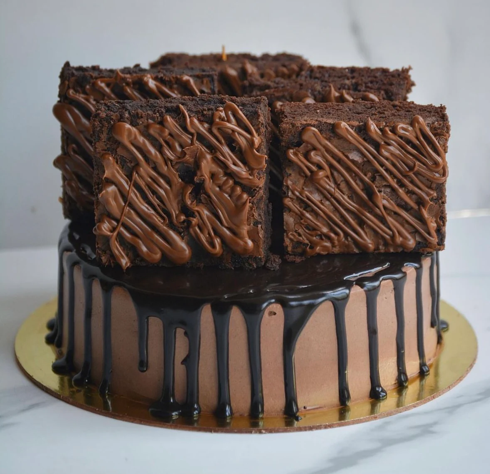

Welcome to The Brownie Bakehouse, where indulgence meets craftsmanship! We believe every bite should be a moment of pure joy. Our shop is dedicated to creating the most decadent, mouth-watering brownies you'll ever taste.
Using only the finest ingredients, our bakers whip up a variety of flavors that cater to every sweet tooth. From classic chocolate fudge to exotic matcha white chocolate, our menu is bursting with options to delight your senses. Each brownie is baked to perfection, ensuring a rich, moist texture that melts in your mouth with every bite.
But it’s not just about the brownies – it’s about the experience. Our cozy, inviting shop is the perfect place to relax and enjoy a sweet treat, whether you’re catching up with friends over coffee or taking a moment for yourself.
At The Brownie Bakehouse, we’re more than just a bakery; we’re a community. We host regular events, including brownie-making workshops and tasting sessions, to bring brownie enthusiasts together and share the love of baking.
Come visit us at The Brownie Bakehouse and discover your new favorite indulgence. One bite, and you’ll be hooked!
Customer's Popular Picks
"Biscoff brownie, a rich, fudgy chocolate treat infused with the unique spiced flavor of Biscoff cookies and cookie butter. Combining the deep cocoa taste of a classic brownie with the warm, caramelized notes of Biscoff, this dessert offers a delightful contrast in texture and flavor, making it a decadent indulgence for any sweet tooth."
Biscoff Brownie
"Sizzling brownie with ice cream, a decadent dessert featuring a rich, warm brownie served on a sizzling hot plate, topped with a generous scoop of creamy vanilla ice cream. As the ice cream melts over the hot brownie, it creates a delightful contrast of temperatures and textures, making each bite a heavenly blend of gooey chocolate and cool, velvety sweetness."
Sizzling Brownie with Ice-cream
"Decadent cake topped with rich, fudgy brownie pieces, combining the moistness of cake with the chewy, chocolatey goodness of brownies for an indulgent dessert experience. Each bite delivers a delightful contrast of textures and flavors, making it perfect for chocolate lovers. Finished with a drizzle of chocolate ganache, this cake is a showstopper at any celebration, offering a delicious twist on classic desserts."
Cake cum Brownie
Our Workshops
Choosing Ingredients
Ingredient Insights: Selecting the Best for Your Brownies
Quality Matters: Sourcing the Finest Ingredients
From Pantry to Perfection: The Secret to Great Brownies
Mixing Techniques
The Perfect Blend: Essential Mixing Techniques for Brownies
Whisk, Fold, and Stir: Achieving the Ideal Brownie Batter
Texture Talk: How Mixing Methods Affect Your Brownies
Presentation and Plating
Brownie Beauties: Presentation Techniques for Wow Factor
From Oven to Instagram: Plating Your Brownies Like a Pro
Dessert Art: Creative Plating and Presentation for Brownies